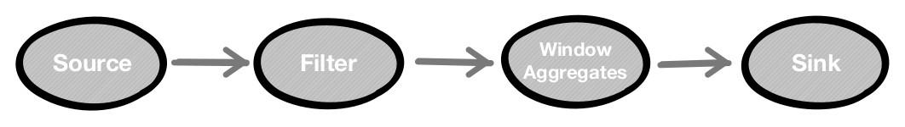
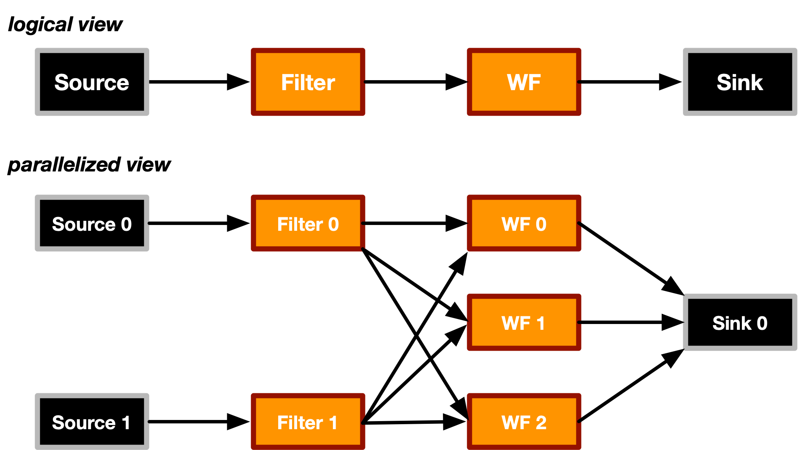
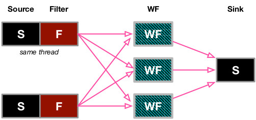

A C++17 Data Stream Processing Parallel Library for Multicores and GPUs
A C++17 Data Stream Processing Parallel Library for Multicores and GPUs
In this part, we show a simple application in order to describe how to use of the WindFlow's API. For further details about the library, developers can refers to the doxygen documentation available in the source code.
The application that we propose here is a simple financial application reading data ticks from a financial market. Logically, the application can be modeled as a pipeline of four stages connected with each other as in the figure below:

The source produces a stream of records with a stock symbol (string), volume (integer), price (float), timestamp (long), identifier (long) attributes. The stream is received by a filter operator in charge of dropping all the inputs except the ones with symbol equal to "FOO-COMPANY". The third operator computes the Volume Weighted Average Price (VWAP) of the last 1,000 records by producing a new result every 10 new items. Results are received by the sink operator.
First, we introduce the data type of the records exchanged by the operators. We develop the following class named tick_t:
// includes
#include<windflow.hpp>
...
// financial tick
struct tick_t
{
std::string symbol;
uint64_t id;
uint64_t ts;
float price;
size_t volume;
// default constructor
tick_t(): key("undefined"), id(0), ts(0), price(0.0), volume(0) {}
std::tuple getControlFields() const
{
return std::make_tuple(key, id, ts);
}
void setControlFields(std::string _key, uint64_t _id, uint64_t _ts)
{
key = _key;
id = _id;
ts = _ts;
}
};
All the data types exchanged by operators in WindFlow must be copy constructible, with a copy assignment operator and a default constructor. Furthermore, they must provide two public methods:
std::tuple with three parameters. The first is the key attribute (with string type in the example). The library supports as key attributes any C++ type T for which the std::hash<T>() function is defined. The second field is the unique identifier (of type uint64_t starting from zero) of the item within the substream. The last field of the tuple is the timestamp (starting from zero with granularity at the microsecond) represented by a uint64_t value;Important Note: the timestamp must be set in the Sources and it must be monotonically increasing in each replica of the Sources. The unique identifier must be included but it is generally not needed by the user explicitly (it is used by the run-time system for count-based windowed operators). As a rule of thumb and a good programming practice in the library, each replica of the operators producing new output values should count the number of outputs produced and the identifier should be set to this value before emitting each value (although this is not strictly mandatory).
The first step is to create the source operator. The business logic in charge of generating the ticks is provided by the user to the operator builder through either a lambda expression, a plain function, or a functor object. In the code below, we define a functor class:
// source functor class
class Source_F {
public:
uint64_t len; // stream length
uint64_t sent;
volatile unsigned long start_time;
// constructor
Source_F(uint64_t _len): len(_len), sent(0)
{
start_time = current_time_usecs(); // provided in the header of the library
}
// generation item-by-item
bool operator()(tick_t &t)
{
t = readTuple(sent); // fill the symbol, price and volume fields (e.g., by reading the sent-th row of a file)
t.id = sent++;
t.ts = current_time_usecs() - start_time;
if (sent < len)
return true; // operator() will be called again on a new tick_t to be filled
else
return false; // this tick_t is the last one of the stream
}
...
};
In the code, we have omitted the definition of the readTuple() function in charge of parsing input items from a network socket. In the example, the source generates a predefined number of items. To create the source operator, the developer should use the builder class provided by the library. So doing, using the last C++17 features (Class Template Argument Deduction), all the template arguments needed to instantiate the operator are automatically deduced by the function/functor/lambda provided to the builder constructor, thus making the life easier to the programmer in addition to provide a fluent interface for the operator creation. The construction of the source is shown below:
// main
int main(int argc, char *argv[]) {
...
Source_F source_func(1000000);
// creation of the Source operator
Source source = Source_Builder(source_func).withName("mysource")
.withParallelism(2)
.build();
}
The source is created with two replicas and with a string corresponding to its name in the application.
In case of support for C++14 only, the source code must be modified by expliciting providing the template arguments to the operator builder, since they cannot be automatically deduced. The source code becomes:
// main
int main(int argc, char *argv[]) {
...
Source_F source_func(1000000);
// creation of the Source operator
auto *source = Source_Builder<decltype(source_func)>(source_func).withName("mysource")
.withParallelism(2)
.build_ptr();
}
The filter operator is created in an analogous manner. First, a functor class is defined with the operator business logic, as shown below:
// filter functor
class Filter_F
{
public:
bool operator()(tick_t &t)
{
if (t.symbol == "FOO-COMPANY")
return true;
else
return false;
}
};
All the input ticks with symbol not equal to "FOO-COMPANY" are dropped (return value is false). The operator is created by leveraging its builder class and, in this example, with the same parallelism of the source (we assume C++17 in the rest of this example):
Filter_F filter_func;
// creation of the Filter operator
Filter filter = Filter_Builder(filter_func).withParallelism(2)
.withName("myfilter")
.build();
To compute the window aggregate, we use the Win_Farm operator. We note that in this application, all the items coming out from the filtering phase have the same symbol attribute. So, key-based parallelism is totally useless in this example. To instantiate the operator, we define its business logic. We use a function to do that (lambda expressions or functor objects are still allowed here):
// user-defined window function
void vwap(uint_64_t wid, const Iterable<tick_t> &win, result_t &r) {
size_t total_volume = 0;
float sum = 0;
for (auto t: win) {
sum += (t.price * t.volume);
total_volume += t.volume;
}
result.vwap = sum/total_volume;
};
In this example, the function uses the non-incremental signature that computes the window when it is ready to be processed by giving the read-only access to all of its items through a Iterable object. Other definitions of the function (e.g., incremental) are allowed (see the doxygen documentation). The type result_t is the result data type computed per window, providing the same control methods of tick_t (i.e. getControlFields() and setControlFields()). For window-based operators, the run-time system automatically sets the key attribute, unique identifier of the window and the timestamp of the window result automatically. The operator is created through its builder class:
Win_Farm win_agg = WinFarm_Builder(vwap).withCBWindow(1000, 10)
.withParallelism(3)
.withName("myvwap")
.build();
The operator is created with three replicas and with a count-based window semantics. Finally, the sink operator is created, first implementing its business logic:
// sink functor
class Sink_F
{
size_t received;
public:
// constructor
Sink_Functor(): received(0) {}
// operator()
void operator()(std::optional<result_t> &out)
{
if (out) {
received++;
cout << "Window " << *out.id << " vwap " << *out.vwap << endl;
}
else
cout << "End stream" << endl;
}
};
The function is called by the run-time system of the library each time a new item is received. The item is encapsulated in a std::optional. This allows checking the end of the stream (in that case the optional returns false and must be not dereferenced). The operator creation is as follows:
Sink_F sink_func;
// creation of the Sink operator
Sink sink = Sink_Builder(sink_func).withParallelism(1)
.withName("sink")
.build();
The source is created with one replica.
Once the operators have been created, they must be connected together. To do that, WindFlow provides a MultiPipe construct. In the basic case, it is essentially a sequence of multiple linear pipelines with streams crossing them. MultiPipe instances cannot be directly created by the user, but instead they are obtained from the PipeGraph construct which represents a sort of streaming environment where to build the WindFlow application. The following code shows how the application can be created using this construct:
PipeGraph env("vwap_app", Mode::DETERMINISTIC);
MultiPipe &pipe = env.add_source(source);
pipe.add(filter);
pipe.add(win_agg);
pipe.add_sink(sink);
env.run(); // <- run the app
The PipeGraph environment is created with a string provided to its constructor as the name of the application (useful for logging purposes, enabled with the compilation macro TRACE_WINDFLOW enabled). The second parameter of the PipeGraph is the execution mode. Two modes are supported:
The application has the following structure:

The logical view (using the Flink's jargon) shows how operators are connected together. It is possible to generate a DOT representation of the logical view of a PipeGraph by invoking the dump_DOTGraph() method (the code needs to be compiled with the GRAPHVIZ_WINDFLOW macro, and properly linked to the cgraph and gvc libraries.)
According to the FastFlow programming model, each replica is implemented by a dedicated thread in the run-time system pinned on a specific core (actually a thread context) of the architecture. The automatic pinning can be disabled by compiling with the FF_NO_DEFAULT_MAPPING macro. In the figure, eight threads are used by the application. To reduce the amount of threads, WindFlow provides a chaining support to fuse operators' replicas into single threads (not always possible). In the example, we can apply chaining between the source operator and the filter one (same number of replicas without keyby distribution in the middle). The benefit is not only in the thread reduction, but also because the data exchange among operators mapped onto the same thread is more efficient (it is based on function calls instead of using the lock-free FastFlow queues). The code change is very minimal:
...
pipe.chain(filter);
...
The corresponding application structure has now six threads as in the figure:

This example, although useful to understand the philosophy of the library, does not cover all the provided features. Notably, the library supports the merge and the split of MultiPipe instances to create application graphs with more general structures, useful to model more complex applications. Further details can be easily understood by reading the doxygen documentation alongside the source code available in GitHub with the provided examples in the windflow/tests folder.